Bikepacking - Attack of the Buns
Attack of the Buns…. Or perhaps this blog post should be called Attack of the Braids, because we began the adventure from Braidwood, instead of the usual start in Bungendore. This blog post is all about my recent bikepacking trip in early 2025. We started in Bungendore travelling through Morton National Park past Nowra and Kangaroo Valley finishing in Moss Vale.
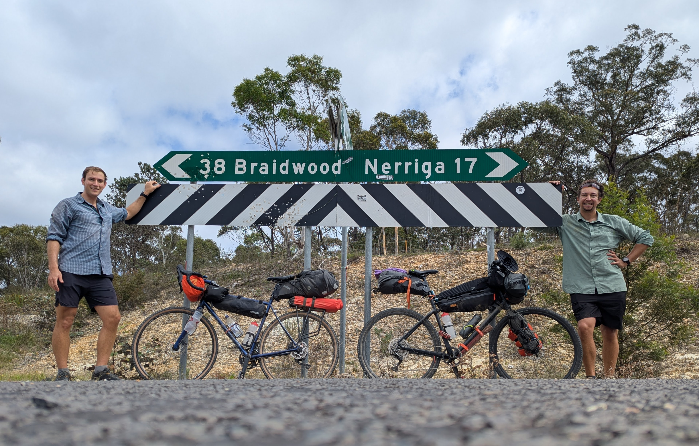
Day 0: Car Logistics
The trip “began” after work on a Wednesday afternoon. The plan was for Robin and I to drive separately from Canberra to Moss Vale. We would then “scissors, paper, rock” to determine whose car would be left in Moss Vale, then grab Subway and back home. With our bikes and gear now all packed in the car, it was time for an early nights sleep.
The plan from here would be to drive to Braidwood, then cycle across 4 days back to the car in Moss Vale and then collect the other car in Braidwood and head back to Canberra. The alternatives would have been getting someone to pick us up from Moss Vale or catching the train back to Canberra. Having overestimated our bikepacking speed in the past, the convenience of having our own transportation post-bike leg was very worth the Wednesday evening effort.
Day 1: Braidwood to Piercys Clearing
The Bike Pump…
Today was the first day where (almost) everything went to plan - unfortunately a rariety in my bikepacking career so far.
Awake and ready to start the day, we would make our way straight to Braidwood Bakery1. The bikes and bags are now fully setup and we’ve taken our first of many 10 second self-timer photos. Robin wants to quickly pump up his tires before we hit the gravel. To our surprise, I realise that I had forgotten to bring the valve adaptor for our pump2.
1 Braidwood Bakery is such a local classic for any Canberrans heading to the coast for the weekend.
2 Most modern bikes use Presta valves, whereas cars use Schraeder valves, unfortunately, my handpump only had the Schraeder valve. A rookie mistake!
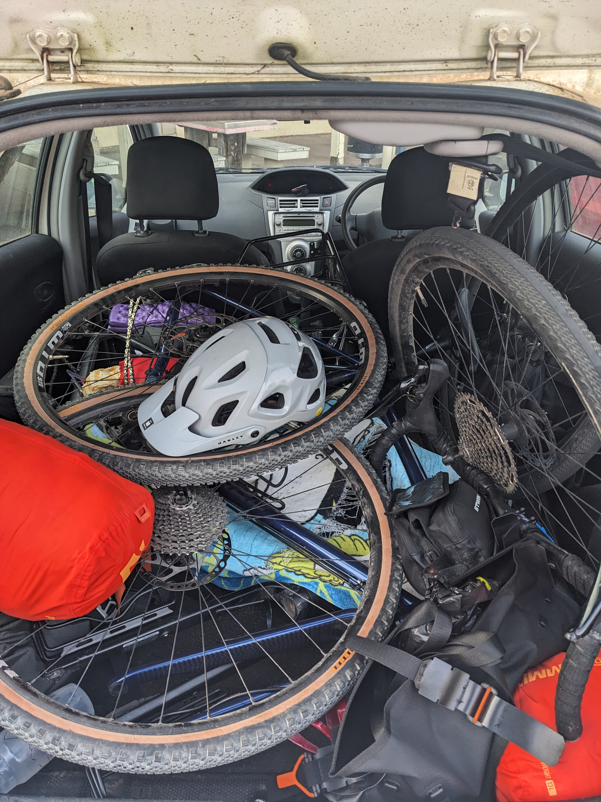
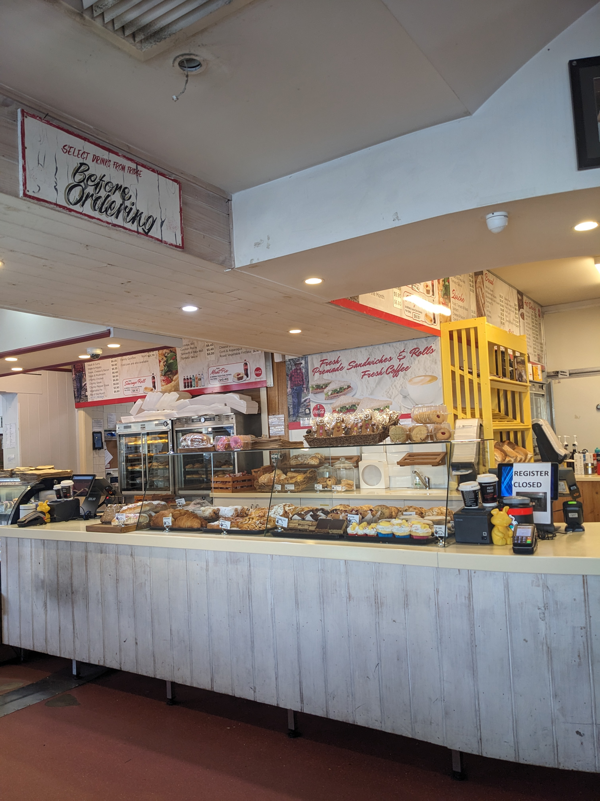

In a worried manner, we push our bikes through town asking shopkeepers if they sell any pumps:
- The local outdoor shop … negative
- The petrol station … negative
- The local IGA … negative
- Thankfully, Braidwood Mitre 10 came in clutch with a full-sized bike pump
We strap it onto my front handle bars with some spare straps I brought (a reminder to always bring some spare straps!).
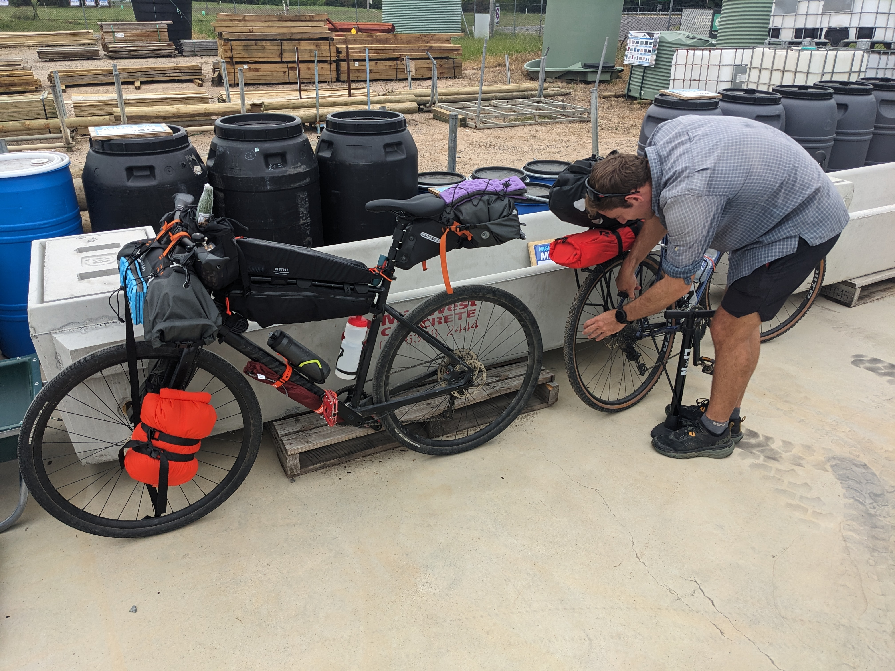

Pumped up, let’s go, off to Nerriga Pub!
And off we go having already problem solved, we jump onto Little River Road leading onto Charleys Forest Road off to Nerriga. The gravel was smooth and slightly undulating. Complimented by a cool misty morning, we were flying past grazing cattle, calm creek crossings, and a peaceful snake enjoying the warm road!

With the sun starting to break through the clouds, arriving at Nerriga was a lifesaver from the incoming onslaught of the heat. Excited to down a celebratory pint of Carlton Draught and a pub feed, we were greeted by two confused looking locals joking they would have preferred taking their motorbikes instead of bicycles. I followed with a slight nod and a chuckle, as I gazed over to see another bikepacker enjoying the shade. Not able to wait any longer, I rush inside to see a bustling pub full of elderly people enjoying their meals. I order the pub burger and my pint and head outside curious to hear where the other bikepacker had come from.
Lachie had the full bike setup, a bunch of bike bags, mountain bike cleets, thick tires, and even some tri bars. I knew I was just about to meet an expert in the field. Offering a seat to his table, we had lunch with him finding out he had just come from Gerringong via the same route we had planned - only to realise his final destination was not Braidwood, but in fact Tasmania…. After exchanging stories and advice, Robin and I left for our afternoon session.
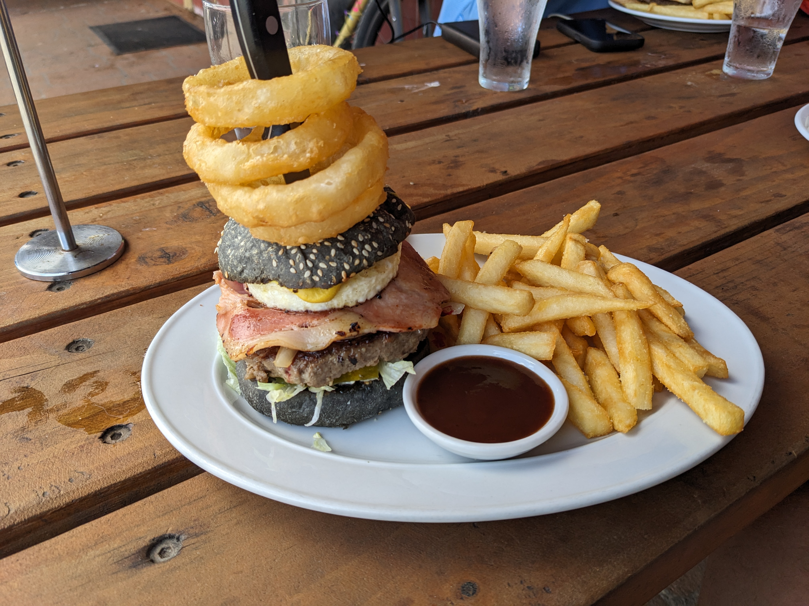
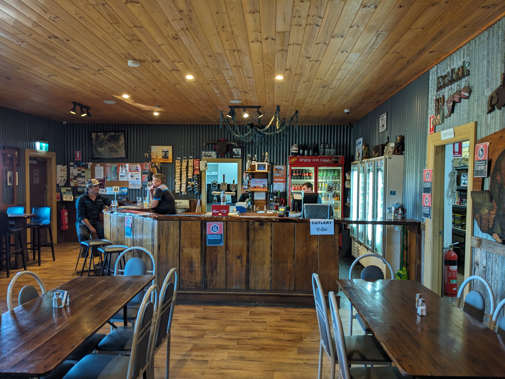
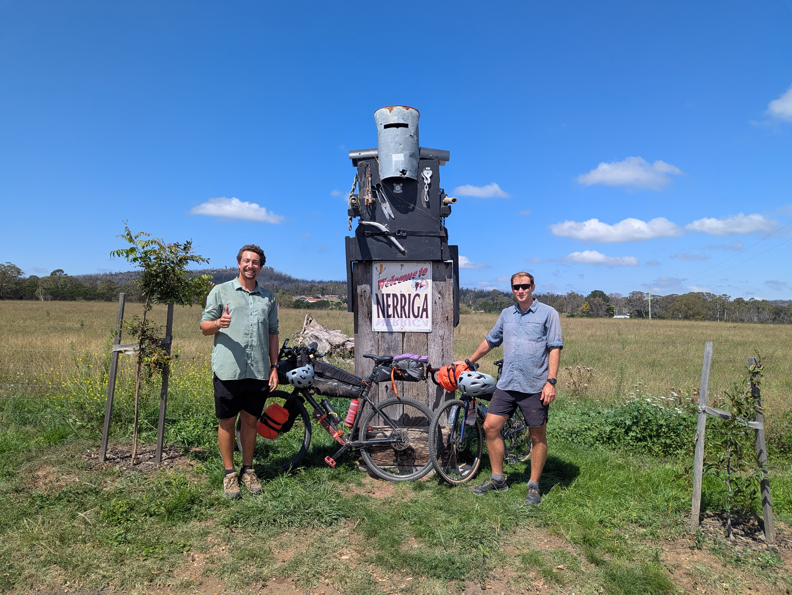
Endrick River swim
Back on gravel, we came across Endrick River, a lovely swimming spot by a small shady forde. Perfect timing, plenty of daytime to spare, so a quick dip was so refreshing! Drying off, we’re back on the bikes cycling through Morton National Park overlooking some impressive cliff faces following the Red Ground Track3. After a small mishaps in navigation4, we arrived at Piercy’s Clearing about 100m from a smaller estuary of Endrick River. Another quick rinse off followed by some Backcountry freeze-dried Satay Chicken and some much needed stretching, we were ready for sleep.
3 Beware this Track is super rocky, like big chunky sharp rocks. I’m surprised we didn’t get a flat!
4 Note to self: Always double-check the map, especially after a 35°C day of cycling 🥵


Some night time reflection
Laying on my mat resting my head against my rolled up sleeping bag. The current sleeping arrangements are a cosy 1-person tent with a luxuriously large Sea to Summit sleeping mat. Planning on using my sleeping bag liner and keeping the bag packed up given the a warm-ish night. I reflect through photos and videos of the day feeling my joints relax and recover after a warm days ride.
Listening to the rustling shoulders against the mat searching for the optimal position, I finally get comfortable and wrap myself in the liner. Immediately, I feel the merino radiating keeping me warm and snug and slowly close my eyes to the whispers of crickets and creaking nocturnal animals in the distance. Hopefully I still have all my food in the morning!
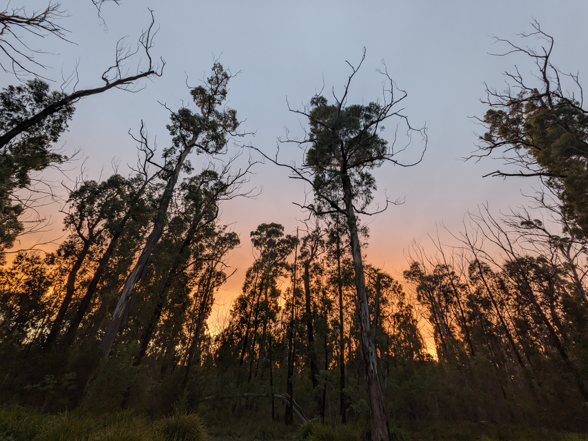
Day 2: Piercy’s Clearing to Nowra
Breakfast is always a struggle! Consistent food intake is so so important when it comes to endurance events. So when I know there’s a long, sunny day ahead, I’ll attempt to eat as much as I can for breakfast and essentially every other meal of the day.
- Breakfast (at Piercy’s Clearing): Porridge, nutella, salami, hazelnut coffee
- Lunch (at Yalwal): Backcountry Moroccan Lamb
- Dinner (in Nowra): Pizza, Bundaberg Guava
- Dessert (at the motel): Maxibon, chocie milk
- Snacks (constantly): Peanut M&Ms, salted nuts, soya Crisps, Gu gels5, powerade
5 Big fan of the flavourless Nude “flavour”. Strawberry and Banana & Birthday Cake are pretty good too. I prefer thicker gels, so Gu works well for me.
Rocky flats & sandy downhills
Today’s first few kilometres are met with large rocky sections making a very slow start. I’m surprised we didn’t get any flats as it was very technical riding on our thin gravel tires. We finally made it out of that “hell-ish”6 rocky section to arrive on top of the clouds overlooking the valley we’d just been sleeping in. It’s an awesome feeling looking out into the distance on the cliff tops, feeling a slight breeze on your face surrounded by eucalypts watching the fire trail dance along the ridgeline. This was one of the highlights.
6 We met another bikepacker racing in the Sydney to Summit race, who greeted us with “welcome to hell”, as he was flowing down the mountain. I think he was in a lot of pain, the kind of pain that is felt once you’re truly past type 2 fun. I think I found his Strava after the trip; he made it to Kosciuszko.
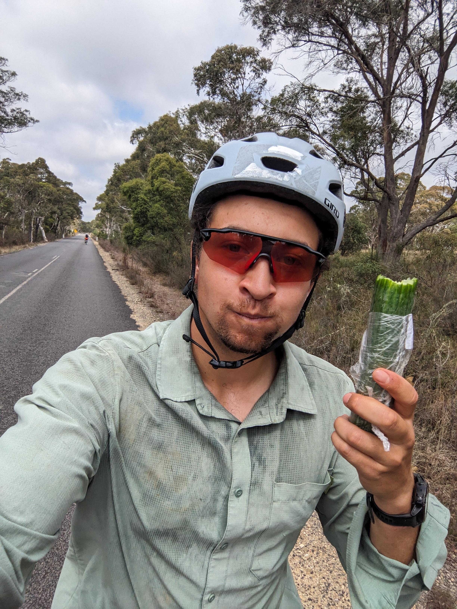


Back into action, we get back onto tarmac for a sweet 75km/h+ speedy descent down Braidwood Road7 shortly after jumping back onto the gravel following Yarramunmun Firetrail. Now we had switched from rocky technicals to the sandy downhills, from one technical to the next. Whilst the downhill was appreciated, the heat reflecting off the white-beige sand radiated for what felt for a few monotonous hours.
7 Going fast is just such a thrill, but wow it’s also just so so dangerous.
8 I can’t believe there are some people that opted to do Attack of the Buns the opposite direction and would have to climb up that section, absolutely bonkers.
Thankfully, after an incredibly steep descent8, we finally made it into Yalwal, a camping green space next to one of several dams around the Shoalhaven region. Seeking out shelter from the blistering sun, we spent over 2 hours eating, playing cards, attempting to rehydrate and recover in preparation for a big climb out of the basin. After a backcountry, way too many M&Ms, several chugs of my warm Powerade, we were as ready as could be for the climb.

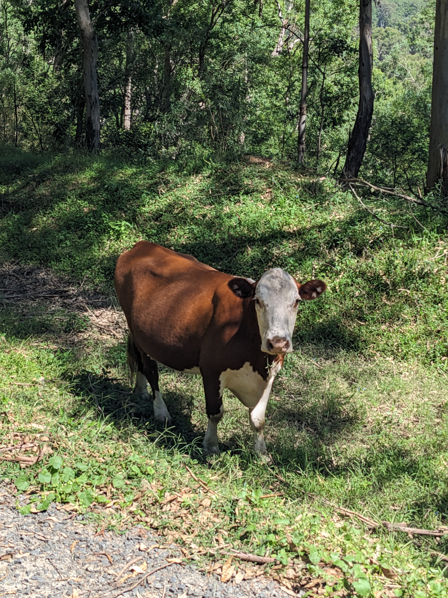
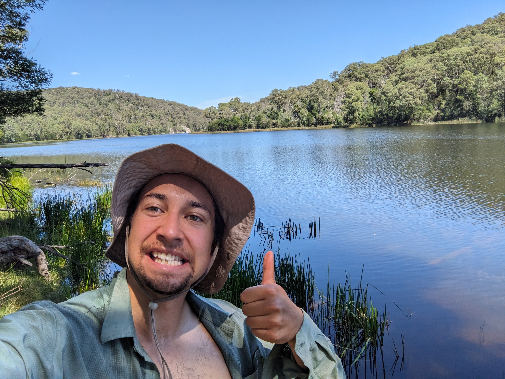
The Fun Scale - “this is fun, that was fun, that sucked”
Powering up a mountain is a mental game, a tug of war between pushing through the lactic acid buildup or stopping and catching a break in the shade. The latter is promising, but the ego says otherwise. At some point, the body gets used to the pain, sometimes even reaching the nirvana-state of type 2 fun - miserable in the moment, but awesome in retrospect. Thoughts slowly get filled with echoes of doubt, but also reminders of triumph and motivation9. The grit comes out and you power through sometimes even zoning out or perhaps it’s actually zoning in; into a state of mind where the only objective is “push” and hope you don’t end up in type 3 fun10. Enough talk about the fun scale, back to the day.
9 There’s definitely a motivation to push through the pain to ensure you maximise your Strava statistics. Anything for the forward-looking expectation of the kudos-induced dopamine hit! ⚡
10 Type 1 fun is fun in the moment and in retrospect. Type 2 fun is not fun in the moment, but fun in retrospect (this is probably the most prominent feeling for long-distance runners). Finally, type 3 fun is not fun in the moment and also not fun in retrospect - “it just sucks”.
Making it up to the top, I see a sun-protected area, whip out my luxury-item - foldable cushioned mats - sit back and enjoy the last drops of my lukewarm powerade. I’m running low on snacks, I’m excited for Nowra. Robin and I enjoy some more shade listening to our nostalgic 2010s (arguably emo/edm phase) music, hop on the saddle heading east to Nowra.

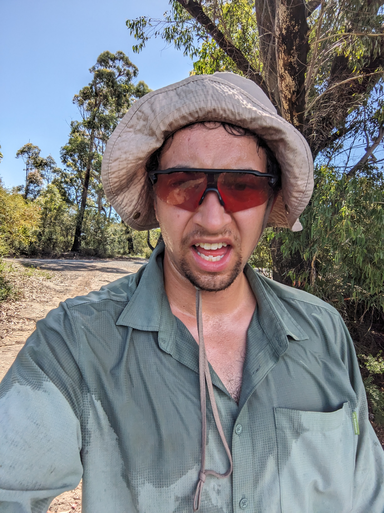
How good is Chocie Milk ❤️
Getting back into a busy town, especially over the summer weekend, was a little bit of a shock. So much stopping and starting. We get into Nowra CBD and I propose to Robbie, that I quickly run into Coles to grab a 2L Oak chocie milk… Best decision. I had about a whole liter within a few minutes.
Getting to the motel made me really appreciate all the common household services, like a cold shower, a microwave, a bed, an aircon (omg the aircon was immediately turned on upon entering!), a chair and table, fresh drinkable cold water11. What luxuries.
11 As someone who’s only recently gotten into camping, this must be a common experience to those more experienced, but alas a nice personal appreciation.
We finished off the day with some local woodfired pizzas and restocking on snacks at Coles. Returning to the aircon-chilled room and covering up under blankets was a lovely change (can’t believe I appreciated this so much given it was only one night of camping eeeep).
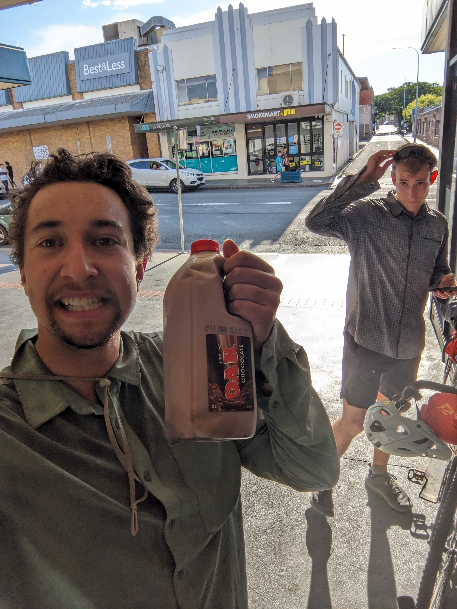
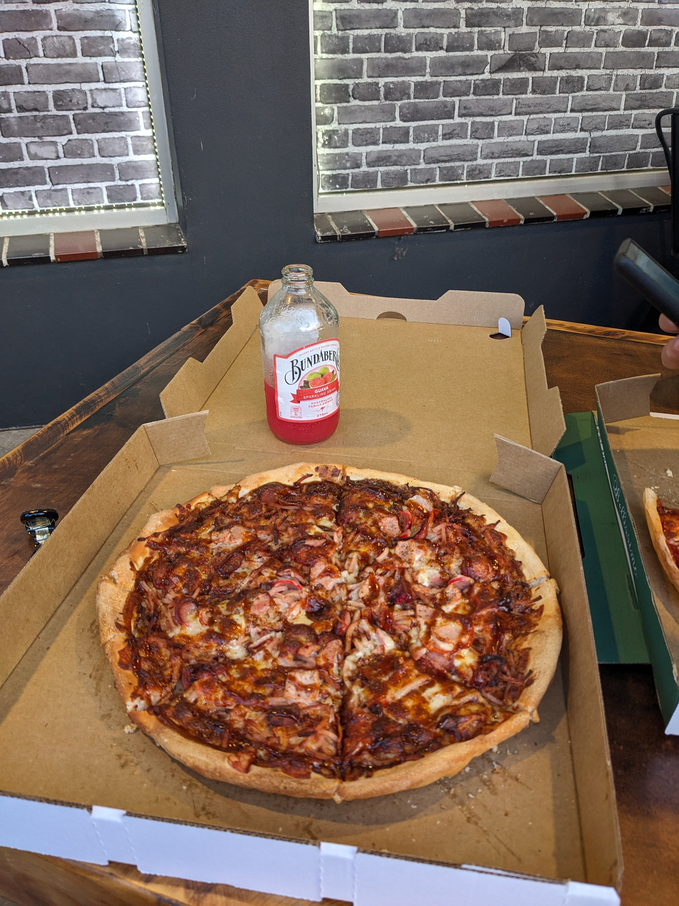
Day 3: Nowra to Griffin’s Farm Campground
Day 3 was another hot day. Climbing out of Nowra, we made our way to Kangaroo Valley via Mount Scanzi. This time with newly stocked snacks and a good nights sleep. The morning ride only took a few hours, so we ended up taking a lengthy break in Kangaroo Valley. First, an iced coffee, then a beer, then another beer + a mushroom burger at the local pub.
A great contrast to the previous two days’ rides. Dermot and Lyla ended up driving and meeting us for lunch and an afternoon swim under the Kangaroo Valley bridge. A shady and refreshing place to cool off from the steamy sun.
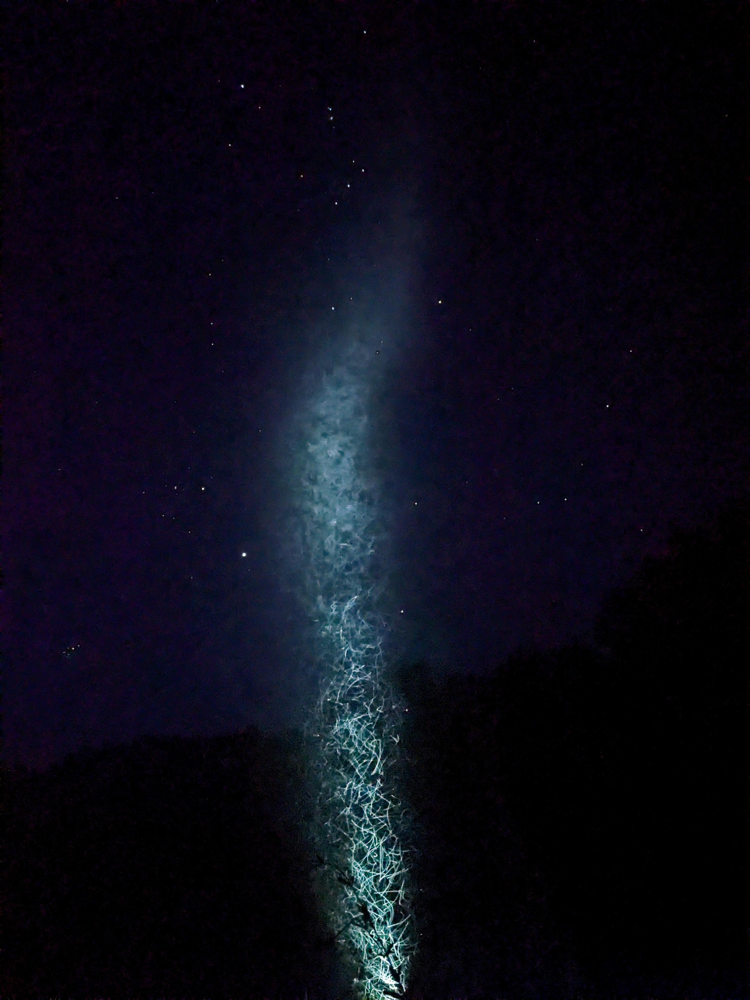
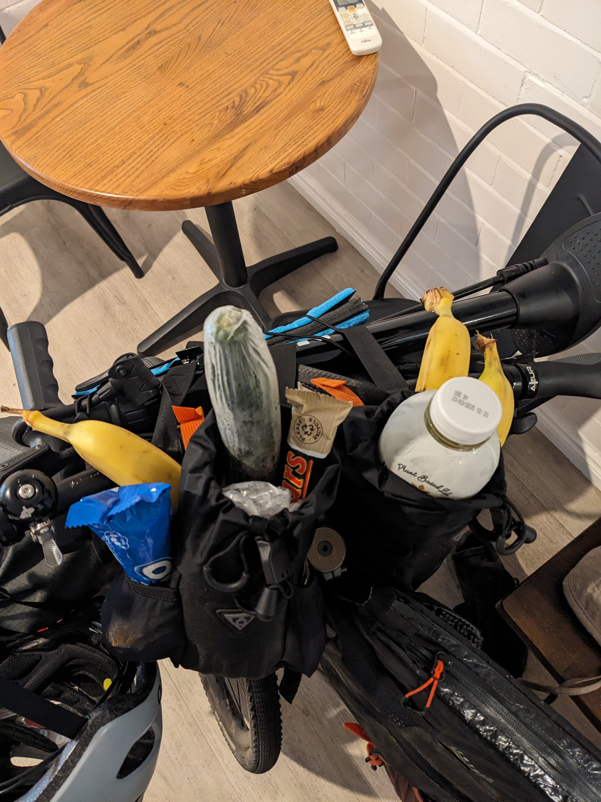
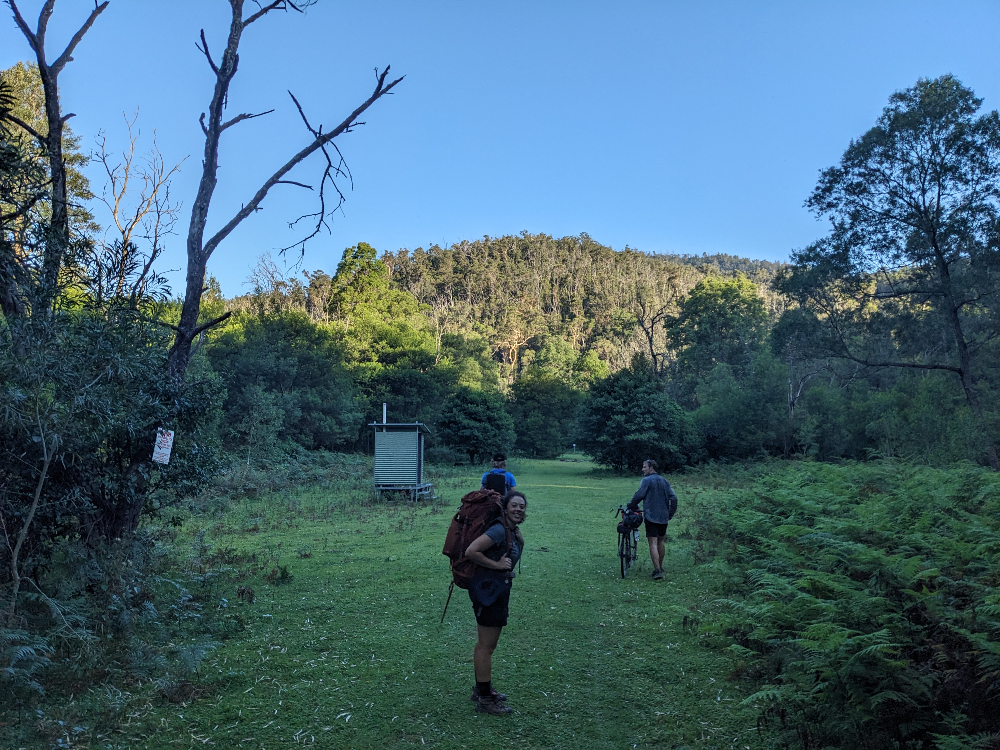
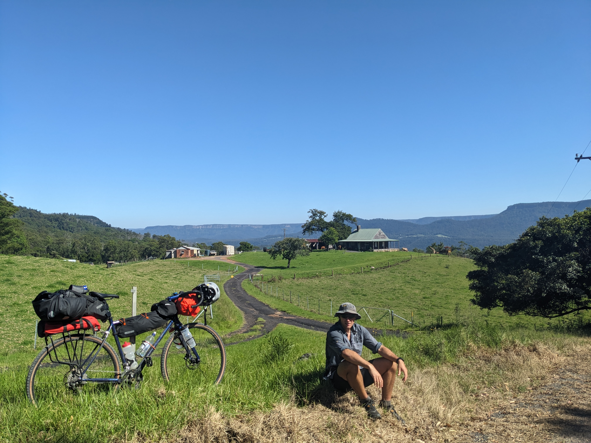

The afternoon was another short ride to Griffin’s Farm Campground, a lovely open clearing next to a flowing creek in the bottom of the valley. A refreshing evening swim cooldown, another Backcountry meal, and finish off the day with some 500! Thankfully, Robin tossed his headtorch into the distance distracting all the bugs, which created some interesting night photography.
Day 4: Griffin’s Farm Campground to Moss Vale to Home
The last day was another shorter ride. A lot of uphill, around 550m consistent climbing, so a lengthy breakfast was necessary. Good thing Lyla brought these extreme electrolyte powder, which we calculated to be about 3 powerade bottles worth. Whilst the morning mist meant we finally had a day without direct sunlight, but this brought with it its own set of challenges… humidity.
We bid our farewells to the (car)packers and began the climb. We cycled past a runner, who apparently started from the top of the hill, this would have been around 1200m of vert over 22km - how wild!. After pressing on and passing Gales Flat Campground, we finally made it to Meryla Pass (the top of the mountain).
A few more country roads and farm properties, we made it back to Moss Vale. Packed up the bikes in the car and grabbed some more food. An iced chocolate, bacon & egg roll, and chips!

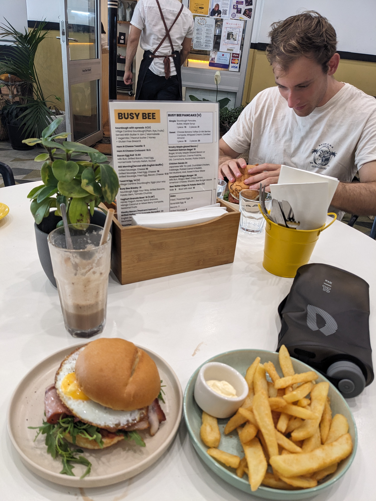


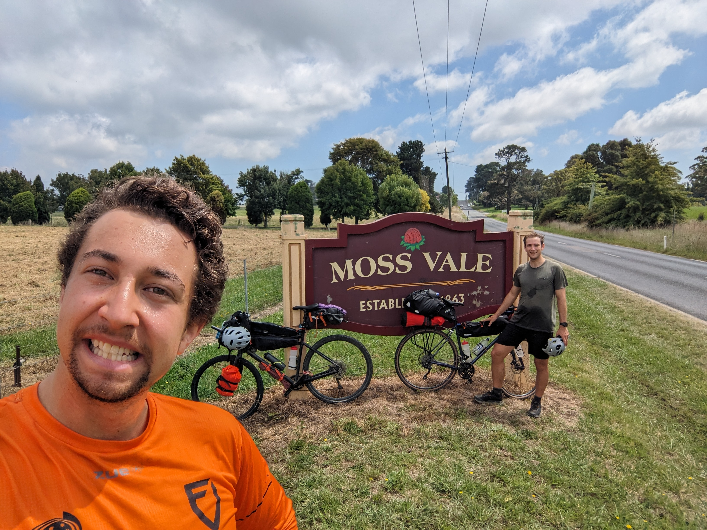
Overall, the trip was very enjoyable, plenty of laughs, a touch too much heat, but great company and views. Looking forward to the next bikepacking adventure!
Appendix Photos
These are the photos that didn’t make it…
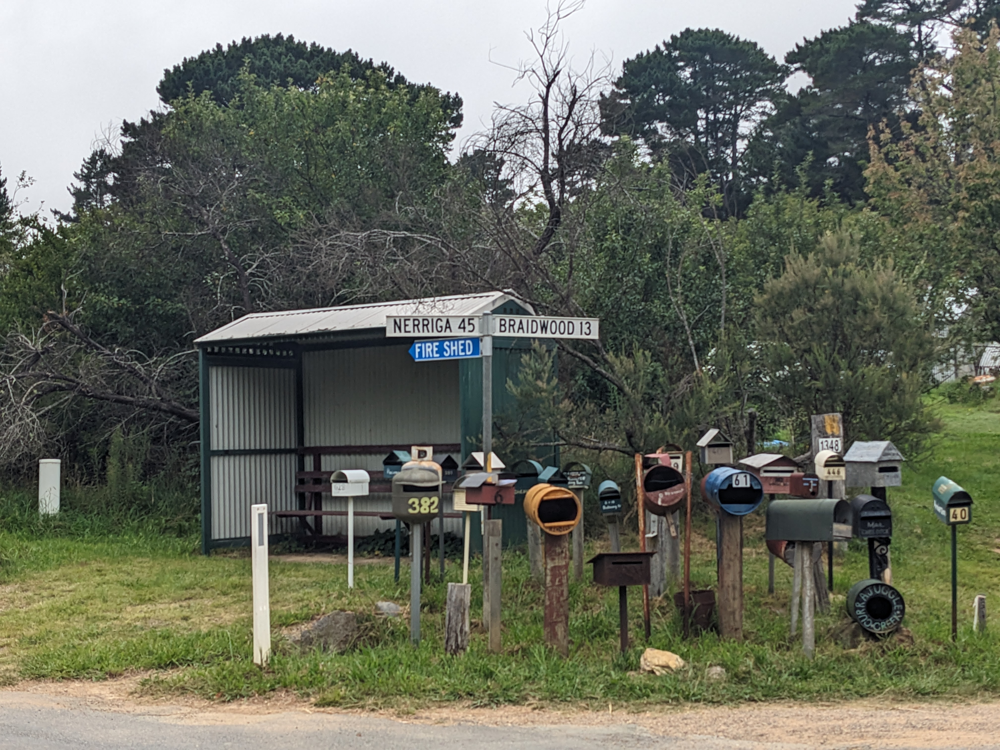
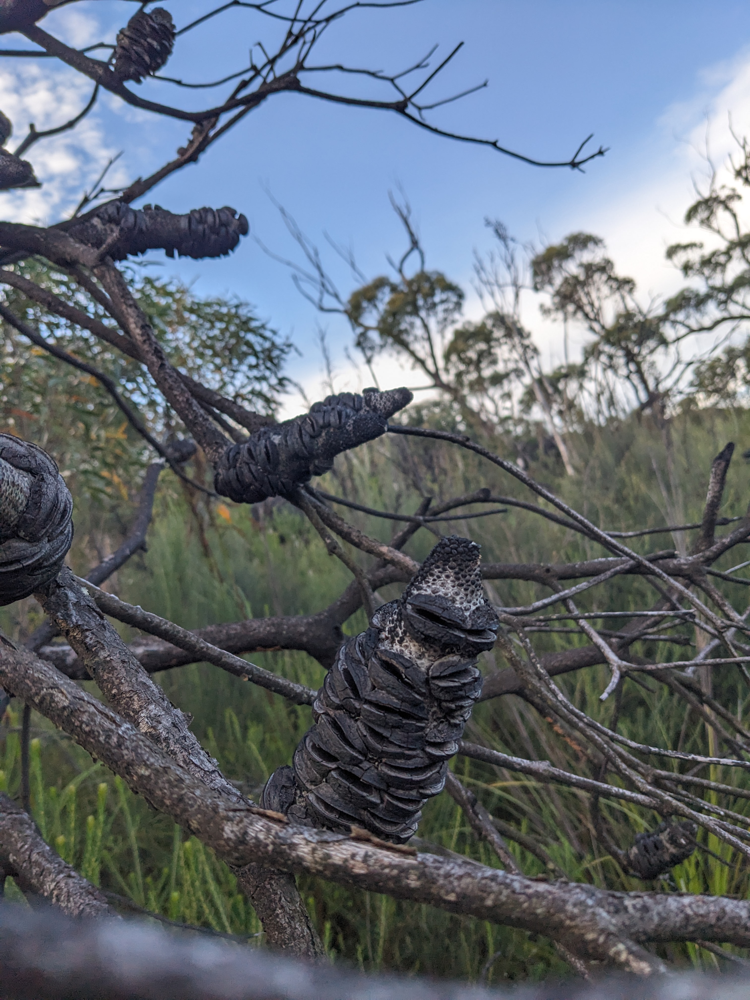
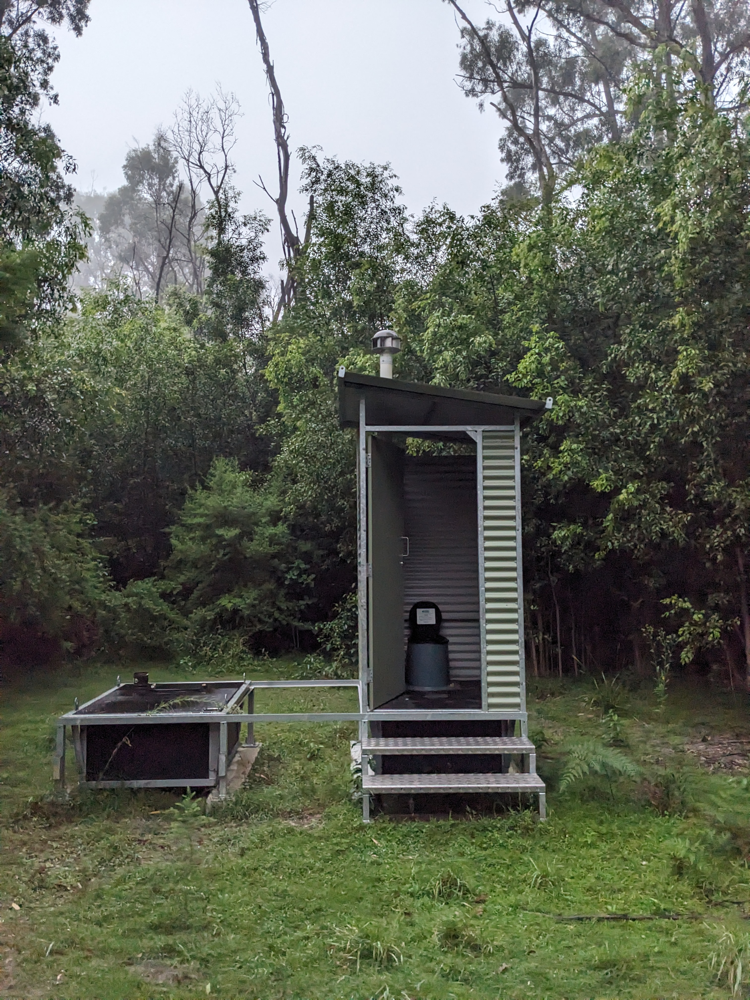